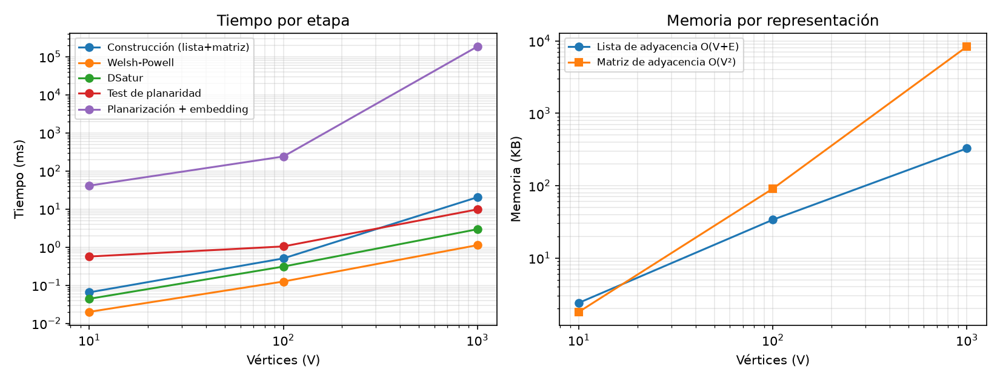
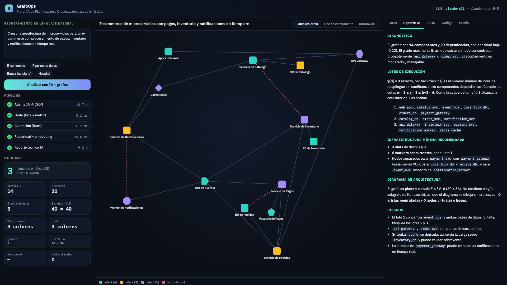
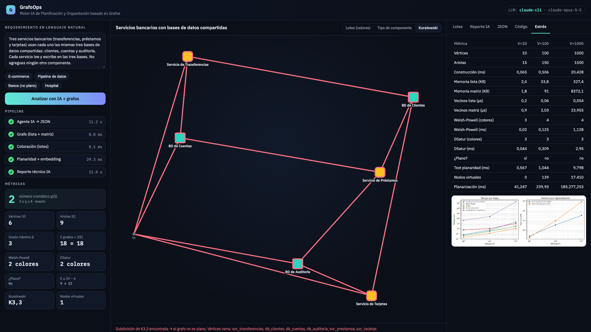

| Curso | FUN-03 · Matemática Discreta II |
| Sección / Periodo | FCP0 · C3-2026 |
| Docente | Lic. Rebeca Chaves Morales |
| Integrantes | Integrante 1 Integrante 2 Integrante 3 Integrante 4 |
| Repositorio | github.com/wrldottoDev/tarea2-mate-discretas-2 |
| Fecha | Noviembre 2026 |
En una arquitectura de microservicios o en un pipeline de datos hay decenas de tareas que comparten recursos: tablas de una base de datos con bloqueos, una API externa con límite de tasa, una cola con consumidor exclusivo o una ventana de migración. Si dos tareas que compiten por un recurso se ejecutan (o se despliegan) al mismo tiempo aparecen bloqueos, condiciones de carrera o errores de cuota. El equipo de plataforma necesita responder dos preguntas: ¿en cuántos lotes, como mínimo, puedo ejecutar todo sin conflictos? y ¿cómo dibujo la arquitectura de forma legible?
Ambas preguntas tienen una formulación exacta en teoría de grafos. La primera es el problema de coloración de vértices: si cada tarea es un vértice y cada conflicto una arista, una coloración propia reparte las tareas en clases independientes (nadie en la misma clase está en conflicto) y el mínimo número de clases es el número cromático χ(G). Es la misma modelación que se usa para horarios de exámenes (Welsh y Powell, 1967), asignación de registros en compiladores o asignación de frecuencias. La segunda pregunta es de planaridad: un diagrama sin cruces existe si y solo si el grafo es plano (Kuratowski, 1930), y cuando no lo es, la técnica estándar de dibujo de grafos es la planarización, que reemplaza cada cruce por un vértice ficticio (Gutwenger, Mutzel y Weiskircher, 2005).
El paso que falta es pasar de un requerimiento escrito en lenguaje natural a ese grafo. Para eso se usa un modelo de lenguaje (LLM) con salida estructurada: el modelo está obligado a responder con un JSON que cumple un esquema (vértices y aristas). La decisión de diseño central del proyecto es la separación de responsabilidades: el LLM traduce e interpreta, pero toda la matemática la calculan algoritmos deterministas y verificables. Así, χ(G), la planaridad y el dibujo no dependen de que el modelo "acierte" un cálculo.
Un grafo simple no dirigido es un par G = (V, E) con E ⊆ {{u, v} : u, v ∈ V, u ≠ v}. El grado deg(v) es el número de aristas incidentes y Δ(G) el grado máximo.
Las dos representaciones clásicas son la lista de adyacencia (para cada vértice, el conjunto de sus vecinos; memoria Θ(V + E)) y la matriz de adyacencia A ∈ {0,1}V×V con Aij = 1 si {vi, vj} ∈ E (memoria Θ(V²), simétrica en grafos no dirigidos).
Una k-coloración propia es una función c : V → {1, …, k} tal que c(u) ≠ c(v) para toda arista {u, v}. Cada clase de color es un conjunto independiente. El número cromático χ(G) es el menor k para el que existe una k-coloración propia. Decidir si χ(G) ≤ k es NP-completo para k ≥ 3 (Karp, 1972), por lo que en grafos grandes se usan heurísticas voraces junto con cotas:
Consecuencia práctica usada en el sistema: si una heurística obtiene k colores y se encuentra una clique de tamaño k, entonces χ(G) = k queda certificado sin necesidad de búsqueda exhaustiva.
Welsh-Powell ordena los vértices por grado descendente y asigna el color 1 a todo vértice de la lista no adyacente a los que ya tienen color 1; repite con el color 2, etc. Garantiza a lo sumo maxi min(di + 1, i) colores. DSatur (Brélaz, 1979) elige en cada paso el vértice no coloreado con mayor grado de saturación (número de colores distintos ya presentes entre sus vecinos), desempatando por grado, y le asigna el menor color disponible. Es exacto en grafos bipartitos y en la práctica usa menos colores que Welsh-Powell.
Un grafo es plano si puede dibujarse en el plano sin que sus aristas se crucen; un dibujo así se llama embedding plano y divide el plano en F caras.
La condición de Euler es solo necesaria (un grafo puede cumplir E ≤ 3V − 6 y no ser plano, como K3,3 con 9 ≤ 12). Para decidir con exactitud se usan algoritmos lineales: Boyer-Myrvold (2004, adición de aristas) o el test Left-Right de de Fraysseix y Rosenstiehl (formalizado por Brandes, 2009), ambos O(V). Para obtener coordenadas, Chrobak y Payne (1995) construyen en O(V) un dibujo con aristas rectas sobre una rejilla de (2V − 4) × (V − 2).
El grafo dual G* de un embedding tiene un vértice por cada cara y una arista dual por cada arista primal que separa dos caras. Insertar una nueva arista u–v cruzando el mínimo de aristas del embedding equivale a un camino mínimo en G* entre las caras que tocan u y las que tocan v; cada arista dual del camino es un cruce, que se reemplaza por un vértice virtual. El grafo resultante es plano por construcción.
El flujo tiene tres etapas, igual que el diagrama de la consigna: (1) el agente IA recibe el texto y devuelve un JSON forzado por esquema; el servidor lo valida (frontera de confianza); (2) el motor algorítmico construye la clase Graph, ejecuta la coloración y el análisis de planaridad y genera un orquestador ejecutable; (3) el dashboard dibuja el grafo con las coordenadas del embedding, colorea por lote, muestra métricas, y el LLM redacta un reporte a partir de las métricas calculadas.
| Módulo | Archivos | Responsabilidad |
|---|---|---|
graph_core/ | graph.py, coloring.py, planarity.py, pipeline.py | Estructuras de datos y algoritmos (sin dependencias de IA). |
ai_agent/ | prompts.py, agent.py | Prompts, esquema JSON, llamadas al LLM y validación de su salida. |
visualization/ | server.py, static/index.html, examples.json | Servidor HTTP (biblioteca estándar) y dashboard interactivo (Cytoscape.js). |
benchmarks/, tests/ | stress_test.py, test_graph_core.py | Pruebas de estrés y pruebas automáticas del núcleo matemático. |
La clase Graph mantiene simultáneamente ambas representaciones y las sincroniza en cada operación: adj (diccionario vértice → conjunto de vecinos) y matrix (lista de listas 0/1), más index (vértice → fila/columna) para traducir nombres a posiciones. Métodos: add_vertex, remove_vertex, add_edge, remove_edge, has_edge, neighbors (lista), neighbors_matrix (matriz), degree, degrees, max_degree, to_dict/to_json, from_dict y to_networkx.
def add_edge(self, u, v, **attrs):
"""O(1): un set.add en la lista y dos celdas en la matriz."""
...
self.adj[u].add(v); self.adj[v].add(u)
i, j = self.index[u], self.index[v]
self.matrix[i][j] = self.matrix[j][i] = 1
| Operación | Lista de adyacencia | Matriz de adyacencia |
|---|---|---|
| Memoria | Θ(V + E) | Θ(V²) |
| Agregar vértice | O(1) | O(V) (una fila y una columna) |
| Eliminar vértice | O(deg v) | O(V²) en el peor caso (reindexar) |
| Agregar / eliminar arista | O(1) esperado | O(1) |
| ¿Existe la arista u–v? | O(1) esperado (conjunto hash) | O(1) peor caso |
| Recorrer vecinos de v | O(deg v) | O(V) |
| Recorrer todas las aristas | O(V + E) | O(V²) |
Los grafos de arquitecturas reales son dispersos: E crece linealmente con V (en nuestras pruebas E = 1.5V). En ese régimen la lista ocupa Θ(V) mientras que la matriz ocupa Θ(V²): con 1000 nodos la matriz ya pesa 8.2 MB frente a 0.32 MB de la lista (25 veces más), y con 100 000 nodos la matriz necesitaría 1010 celdas (decenas de GB), lo que la hace inviable para peticiones masivas. Además, todos los algoritmos del sistema (Welsh-Powell, DSatur, BFS, test de planaridad) recorren vecinos, operación que cuesta O(deg v) con la lista y O(V) con la matriz, convirtiendo algoritmos O(V + E) en O(V²). Por eso los algoritmos usan la lista; la matriz se conserva porque responde has_edge en O(1) de peor caso y porque la consigna pide ambas estructuras. Para grafos densos (E ≈ V²) ambas ocupan Θ(V²) y la matriz es más compacta por arista.
Modelo. Vértice = tarea o microservicio; arista = conflicto (recurso compartido o dependencia directa): sus extremos no pueden ejecutarse a la vez; color = lote o slot de tiempo. Una coloración propia garantiza que dentro de un lote no hay conflictos, por lo que el lote puede ejecutarse completamente en paralelo, y los lotes se ejecutan en secuencia. Así, χ(G) es el número mínimo de etapas y el tamaño del lote más grande es el número de workers concurrentes necesarios.
Se implementaron tres algoritmos en coloring.py:
El pipeline elige la mejor coloración disponible, reporta las cotas ω ≤ χ ≤ Δ + 1, verifica que la coloración sea propia y genera un orquestador asyncio en el que cada lote corre con asyncio.gather (código ejecutable optimizado).
networkx.check_planarity, que implementa el algoritmo Left-Right, de la misma familia y complejidad O(V) que Boyer-Myrvold. Si el grafo no es plano devuelve un certificado de Kuratowski; el sistema lo clasifica contando los vértices rama (grado ≥ 3): cinco vértices de grado 4 indican una subdivisión de K5 y seis de grado 3, de K3,3.def _insert_edge(P, origin, u, v, virtual):
emb = nx.check_planarity(P)[1] # embedding actual
face_of = _faces(emb) # semiarista -> cara
dual = {...} # cara -> [(cara vecina, arista primal)]
# BFS desde las caras que tocan u hasta las que tocan v
# cada arista primal cruzada a-b se reemplaza por a - X_k - b
Entrada inteligente. El usuario escribe, por ejemplo: "Crea una arquitectura de microservicios para un e-commerce con procesamiento de pagos, inventario y notificaciones en tiempo real". El agente usa Claude (claude-opus-5-5) mediante el SDK oficial de Anthropic; si no hay clave de API usa Claude Code en modo headless (claude -p --json-schema), y si no hay LLM disponible, un parser offline por palabras clave para pruebas.
Structured Output. El prompt de sistema define qué es un vértice (gateway, servicio, worker, base de datos, caché, cola, externo) y qué es una arista (dependency si uno llama al otro, conflict si compiten por un recurso exclusivo, con el nombre del recurso). La respuesta se fuerza con output_config.format = json_schema y un esquema con additionalProperties: false, de modo que el modelo no puede devolver texto libre. Aun así, la salida se trata como dato no confiable: clean_graph() normaliza los ids, descarta lazos, aristas a nodos inexistentes y duplicados, y limita longitudes.
{"title": "...",
"nodes": [{"id": "payment_svc", "label": "Servicio de pagos", "type": "service", "description": "..."}],
"edges": [{"source": "payment_svc", "target": "orders_db", "kind": "conflict", "resource": "tabla orders"}]}
Síntesis e interpretación. Después de la coloración y la planaridad, el sistema envía al LLM solo las métricas calculadas (χ(G), si es exacto, cotas, lotes, paralelismo máximo, planaridad, subgrafo de Kuratowski, nodos virtuales) con la instrucción explícita de no recalcularlas. El LLM redacta un reporte técnico en Markdown con diagnóstico, lotes, infraestructura mínima recomendada (slots = χ(G), workers = tamaño del lote mayor, qué separar en nodos distintos), diagrama y riesgos.
| Algoritmo | Tiempo | Espacio | Justificación |
|---|---|---|---|
Construcción de Graph | O(V² + E) | O(V² + E) | Cada add_vertex extiende la matriz en O(V); con solo la lista sería O(V + E). |
| Welsh-Powell | O(V log V + χ·(V + E)) | O(V) | Ordenamiento + una pasada por color; cada pasada revisa cada vértice e intersecta su vecindad. |
| DSatur (heap) | O((V + E) log V) | O(V + E) | Cada arista provoca a lo sumo una inserción en el heap al cambiar una saturación. |
| Clique voraz (cota ω) | O(Σ deg(v)·ω) | O(V) | Por cada vértice se recorre su vecindad comprobando adyacencia con la clique. |
| χ(G) exacto | O(kV) peor caso | O(V) | Problema NP-difícil; solo se ejecuta con V ≤ 25. |
| Test de planaridad (LR / Boyer-Myrvold) | O(V) | O(V) | Si E > 3V − 6 se rechaza de inmediato, así que E = O(V). |
| Certificado de Kuratowski | O(E·V) | O(V) | Se eliminan aristas mientras el grafo siga siendo no plano; solo para V ≤ 150. |
| Embedding Chrobak-Payne | O(V) | O(V) | Triangulación + orden canónico. |
| Relajación sin cruces | O(I·V·(V + Δ·E)) | O(V) | I = 150 iteraciones; cada movimiento se valida contra todas las aristas. Solo V ≤ 60. |
| Subgrafo plano maximal | O(r·log E·V) | O(V + E) | r aristas rechazadas, cada una cuesta O(log E) tests lineales por la bisección. |
| Inserción por grafo dual | O(r·(V + X)) | O(V + X) | Por arista: embedding + caras + BFS lineales en el grafo planarizado (X = nodos virtuales). |
Aunque la consigna menciona el Teorema de Kuratowski como verificación, buscar subdivisiones de K5 o K3,3 por fuerza bruta es exponencial; por eso el sistema decide la planaridad con el algoritmo lineal y usa Kuratowski como certificado de no planaridad, que es como lo usan Boyer-Myrvold y Left-Right.
Grafos aleatorios G(n, m) de Erdős-Rényi con n ∈ {10, 100, 1000} y m = 1.5n (grado medio 3, como una arquitectura dispersa), semilla 42, en una MacBook (Apple Silicon, Python 3.12). Script: python -m benchmarks.stress_test.
| Métrica | V = 10 | V = 100 | V = 1000 |
|---|---|---|---|
| Aristas E | 15 | 150 | 1 500 |
| Construcción lista + matriz (ms) | 0.065 | 0.506 | 20.43 |
| Memoria lista (KB) | 2.4 | 33.8 | 327.4 |
| Memoria matriz (KB) | 1.8 | 91.0 | 8 372.1 |
| Vecinos con lista (µs por vértice) | 0.20 | 0.06 | 0.054 |
| Vecinos con matriz (µs por vértice) | 0.90 | 2.03 | 23.96 |
has_edge con matriz (µs) | 0.155 | 0.132 | 0.231 |
| Δ(G) / cota inferior ω | 4 / 3 | 7 / 3 | 10 / 3 |
| Welsh-Powell: colores (ms) | 3 (0.020) | 4 (0.125) | 4 (1.128) |
| DSatur: colores (ms) | 3 (0.044) | 3 (0.309) | 3 (2.95) |
| χ(G) | 3 (exacto) | 3 (certificado ω = 3) | 3 (certificado ω = 3) |
| ¿Plano? / E ≤ 3V − 6 | sí / sí | no / sí | no / sí |
| Test de planaridad (ms) | 0.567 | 1.044 | 9.80 |
| Aristas reinsertadas / nodos virtuales | 0 / 0 | 33 / 139 | 473 / 17 410 |
| Planarización + embedding (ms) | 41.2 | 239.9 | 185 277 (≈ 3.1 min) |

Análisis.
has_edge con la matriz se mantiene en O(1).

Además del grafo, el dashboard muestra el pipeline con el tiempo de cada etapa, las métricas (χ(G) con sus cotas, Σ deg = 2|E|, Euler, Kuratowski, nodos virtuales), la comparación Welsh-Powell / DSatur / óptimo, el JSON del LLM (exportable), el orquestador generado (descargable) y las pruebas de estrés.
Trabajo futuro: modelar dependencias como grafo dirigido acíclico y combinar orden topológico con coloración; actualizar el embedding de forma incremental en la planarización; usar una matriz dispersa o de bits; agregar Tutte embedding para grafos 3-conexos.
El proyecto muestra que tres objetos de la matemática discreta (la coloración de vértices, los grafos planos y la representación de grafos) resuelven problemas concretos de ingeniería de software: el número cromático da el número mínimo de lotes de ejecución sin conflictos, la teoría de planaridad (Euler, Kuratowski, Fáry, grafo dual) permite dibujar arquitecturas sin cruces o explicar por qué no es posible, y el análisis de complejidad justifica usar listas de adyacencia en sistemas grandes. La IA generativa aporta la interfaz en lenguaje natural y la redacción del reporte, mientras que la corrección queda garantizada por algoritmos con propiedades demostradas y verificadas con pruebas automáticas.
Anthropic. (2026). Structured outputs [Documentación de la API de Claude]. https://platform.claude.com/docs
Appel, K., & Haken, W. (1977). Every planar map is four colorable. Illinois Journal of Mathematics, 21(3), 429–567.
Boyer, J. M., & Myrvold, W. J. (2004). On the cutting edge: Simplified O(n) planarity by edge addition. Journal of Graph Algorithms and Applications, 8(3), 241–273.
Brandes, U. (2009). The left-right planarity test. Universität Konstanz.
Brélaz, D. (1979). New methods to color the vertices of a graph. Communications of the ACM, 22(4), 251–256.
Brooks, R. L. (1941). On colouring the nodes of a network. Mathematical Proceedings of the Cambridge Philosophical Society, 37(2), 194–197.
Chrobak, M., & Payne, T. H. (1995). A linear-time algorithm for drawing a planar graph on a grid. Information Processing Letters, 54(4), 241–246.
de Fraysseix, H., Ossona de Mendez, P., & Rosenstiehl, P. (2006). Trémaux trees and planarity. International Journal of Foundations of Computer Science, 17(5), 1017–1029.
Fáry, I. (1948). On straight line representation of planar graphs. Acta Scientiarum Mathematicarum (Szeged), 11, 229–233.
Fruchterman, T. M. J., & Reingold, E. M. (1991). Graph drawing by force-directed placement. Software: Practice and Experience, 21(11), 1129–1164.
Gutwenger, C., Mutzel, P., & Weiskircher, R. (2005). Inserting an edge into a planar graph. Algorithmica, 41(4), 289–308.
Hagberg, A. A., Schult, D. A., & Swart, P. J. (2008). Exploring network structure, dynamics, and function using NetworkX. En Proceedings of the 7th Python in Science Conference (pp. 11–15).
Karp, R. M. (1972). Reducibility among combinatorial problems. En R. E. Miller & J. W. Thatcher (Eds.), Complexity of Computer Computations (pp. 85–103). Plenum.
Kuratowski, K. (1930). Sur le problème des courbes gauches en topologie. Fundamenta Mathematicae, 15, 271–283.
Rosen, K. H. (2019). Discrete mathematics and its applications (8.ª ed.). McGraw-Hill.
Welsh, D. J. A., & Powell, M. B. (1967). An upper bound for the chromatic number of a graph and its application to timetabling problems. The Computer Journal, 10(1), 85–86.